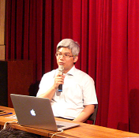

2014-07-14
在7月10日的炎熱下午，由台灣創用CC計畫、網絡行動科技有限公司和BOOKSHOW 說書會聯合舉辦的「公眾領域實務座談與展示會」熱鬧舉行，由台灣創用CC計畫主持人莊庭瑞先生主持，邀請法國CNRS 研究員 Mélanie Dulong de Rosnay 博士及多位各領域學者專家淺談公眾領域和著作權法間之關係、在文化發展中扮演的角色和各領域實務運用上的經驗或困難，並在會後與參加民眾進行小型交流。
- 上半場：座談會
 上半場座談會先由政治大學法學院教授兼台灣創用CC計畫主持人的李治安先生為大家簡介著作權法除了保護著作人，同時也給予著作權人一些權利上的限制，目的是為了平衡著作人私益與公益，由此可推知國家的文化資源和著作人的創作息息相關。也因此，李治安提出「著作權法是平衡的階段性交換政策」的看法：著作權法保障著作人在一定期間內享有權利，但時效過後著作人的創作即成為公有財，屬於全民的文化資源，成為其他創作人的創意、創作基礎養分，此時「公眾領域Public Domain」即顯現出促進文化發展的重要角色地位。
上半場座談會先由政治大學法學院教授兼台灣創用CC計畫主持人的李治安先生為大家簡介著作權法除了保護著作人，同時也給予著作權人一些權利上的限制，目的是為了平衡著作人私益與公益，由此可推知國家的文化資源和著作人的創作息息相關。也因此，李治安提出「著作權法是平衡的階段性交換政策」的看法：著作權法保障著作人在一定期間內享有權利，但時效過後著作人的創作即成為公有財，屬於全民的文化資源，成為其他創作人的創意、創作基礎養分，此時「公眾領域Public Domain」即顯現出促進文化發展的重要角色地位。
李治安分享公眾領域與著作權法的關係後，便由Mélanie Dulong de Rosnay 博士分享COMMUNIA 組織就「保護公眾領域資源」所提出的政策建議、法律上建議、技術面阻礙說明等。COMMUNIA第五號建議：「Digital reproductions of works that are in the Public Domain must also belong to the Public Domain.（略譯：所有在公眾領域中的資源仍應留在公眾領域中。）」係針對如博物館收藏品數位化資源所產生新的著作權法上權利，因權利歸屬於博物館，對本屬於公眾享有的歷史文物、藝術品收藏等其數位化資源施加使用限制、防盜拷措施等情形所提出，點出「法律不保護公眾領域資源免於受到私有化的侵害」之問題。對此，Mélanie女士建議可以先選擇小量卻關鍵的數位化資源釋出，並能使用一體適用的授權規則。
 國立臺灣歷史博物館圖書資源組小組長黃凱祥先生接著分享其進行博物館資源數位化典藏時遇上的智慧財產權問題。黃凱祥提到，許多館內物件因權利人不明，導致博物館人員無從判斷該物件是否已因五十年期滿不受著作權法保護或連絡權利人進行授權，在數位化可能有侵害著作權之虞的的情況下，博物館人員勢必無法進行大規模的文物數位典藏。目前文化部聯合國立臺灣博物館、國立臺灣美術館及國立臺灣歷史博物館進行典藏作業，建置「文化部典藏網」，其中即包含了智財權盤點計畫，期待能讓民眾享有更多的珍貴藏品資訊使用。
國立臺灣歷史博物館圖書資源組小組長黃凱祥先生接著分享其進行博物館資源數位化典藏時遇上的智慧財產權問題。黃凱祥提到，許多館內物件因權利人不明，導致博物館人員無從判斷該物件是否已因五十年期滿不受著作權法保護或連絡權利人進行授權，在數位化可能有侵害著作權之虞的的情況下，博物館人員勢必無法進行大規模的文物數位典藏。目前文化部聯合國立臺灣博物館、國立臺灣美術館及國立臺灣歷史博物館進行典藏作業，建置「文化部典藏網」，其中即包含了智財權盤點計畫，期待能讓民眾享有更多的珍貴藏品資訊使用。
隨後中央研究院民族所研究助技師張藝鴻先生的分享則與Mélanie Dulong de Rosnay 博士提出的 COMMUNIA第五號建議內容前後呼應。張藝鴻提及所內的藏品很多已是屬於公眾領域的文物或出版品，進行數位典藏後卻形成許多限制，反而違背了公眾領域的精神。對此他提出數位典藏資源應採用大眾方便使用的之格式，才更符合公眾領域的精神。

上半場最後一位講者是中央研究院人文社會科學研究中心研究助技師廖泫銘先生。其以國土資訊系統為例，分享近年來隨著「地理資訊具公益性」的觀念普及，該系統已從「政府使用」逐漸朝向「民眾使用」發展；另外也分享有百年歷史地圖成為開放材料，益於研究或文創的使用，便是很好的公眾領域資源的例子。
- 下半場：實務展示
五位學者的分享座談結束後，緊接著由台灣創用CC計畫實習生柯俊如小姐、台灣創用CC計畫技術人員王家薰小姐、台科大資工所博士候選人張欽隆先生三位講者分別介紹展示和公眾領域相關的平台工具。


首先，柯俊如向大家介紹台灣創用CC計畫架設的「公眾領域PD4PD 網站平台」有哪些功能分類，並搭配平台的內容文字解釋公眾領域的意涵精神；接著由王家薰結合「Mediagoblin」與「台灣堡圖」作示範，簡介Mediagoblin具有支援圖像、影音上傳建檔功能及較完善的授權標章等，可作為公眾領域資源資料庫的建置平台；最後上台分享的張欽隆則向大家介紹了他和張藝鴻先生本於「讓數位典藏資源更容易被大眾方便使用」之目的所開發出的線上電子書工具：轉換公眾領域文字檔，是一套有別於Html或Css編輯碼的簡易工具，除了公眾領域的出版資源可以以簡單的格式釋出，也提供創作人一個簡易的撰寫編輯工具，讓網路上的文字資源流通能先掃除一些「技術上的障礙」。
整場座談展示會結束後，參與民眾仍留在會場分別與各學者專家交流提問。由於公眾領域是一個跨領域的知識公共財推動，參加者來自各行各業，所學背景包含科技、法律、教育、資訊等等，因此交流的公眾領域問題檢討非常豐富。期望藉由這次座談展示會，讓更多人了解公眾領域的意涵與重要性，進而讓公眾領域在實務中順利推動。